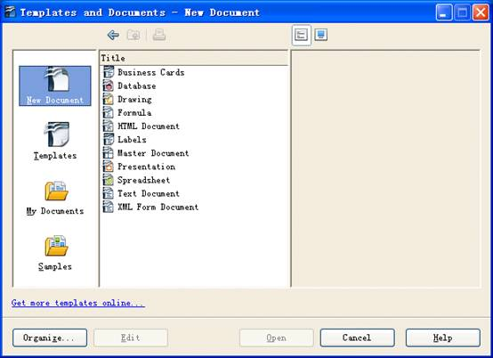
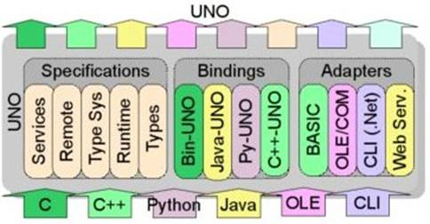
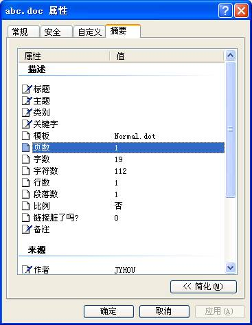

在 IBM Bluemix 云平台上开发并部署您的下一个应用。
Apache POI 介绍
Apache POI 是一套用于访问微软 Office 格式文档 (Word, Excel and PowerPoint) 的 Java API。其中用于操作 Excel 格式文件的 API 是 HSSF，用于操作 Word 格式文件的 API 是 HWPF 以及用于操作 PowerPoint 格式文件的 API 是 HSLF。
POI 的官方网站是 http://poi.apache.org，用户可以先从这里下载最新的版本 3.6，下载解压后里面有三个 jar 包（poi-3.6-20091214.jar，poi-contrib-3.6-20091214.jar 和 poi-scratchpad-3.6-20091214.jar）将这三个 jar 包拷贝至 Eclipse 工程的 lib 目录中，然后刷新工程即可加载 POI 的类库。
POI 主要组成部分
POIFS：POIFS 是该项目的最古老，最稳定的一部分，它同时支持读写功能，所有的组件最终都依赖于它的定义。
POIFS 对于 OLE 2 文件操作： POIFS 的基础是最古老和最稳定的项目的一部分。这是我们的 OLE 2 复合文档格式的纯 Java 实现。它同时支持阅读和书写功能。我们的组成部分都最终依赖于它的定义。更多信息请参阅 POIFS 项目页。
HSSF 对于 Excel 文件操作：HSSF 是针对 Microsoft Excel 97（-2003）文件格式（BIFF8）的文档操作的纯 Java 实现。它支持阅读和书写能力。更多信息请参阅 HSSF 项目页。
HWPF 对于 Word 文件操作：HWPF 是针对 Microsoft Word 97 文件格式的文档操作的纯 Java 接口。该组件是在发展的初期阶段，对 word 文档的读写能力有限，仅仅可以阅读和书写简单的 word 文件，更多信息 HWPF 请参阅 HWPF 的项目页。
HSLF 对于 PowerPoint 文件操作：HSLF 是针对 Microsoft PowerPoint 97（-2003）文件格式的文档操作的纯 Java 接口。它支持阅读和书写能力。更多信息请参阅 HSLF 项目页。
HDGF 对于 Visio 文件操作：除此之外 POI 还提供了 HDGF 对微软 Visio97（-2003）文件格式的文档操作的纯 Java 接口。它目前只支持读取操作，在一个很低的水平，只支持简单的文本提取。更多信息请参阅 HDGF 项目页。
HPSF 文档属性：HPSF 是这对 OLE 2 设置格式的纯 Java 接口。主要是用来存储文件的属性集（如：标题，作者，最后修改日期等属性），他们可以为特定应用目的所使用。更多信息请参阅 HPSF 项目页。
下面我们简单的介绍一下项目中经常会使用到的对于 Excel 和 Word 格式文件进行操作的接口：
HSSF 接口
目前 POI 比较成熟的部分是 HSSF 接口，处理 MS Excel（97-2003）对象。它不像我们仅仅使用 csv 生成的没有格式的可以由 Excel 转换的东西，而是真正的 Excel 对象，你可以控制一些属性如 cell，sheet 等等。当然，HSSF 也有一些缺点，比如不能直接支持 Excel 图表，包与包之间依赖关系比较复杂等等。
对于统计页数 (sheet 个数 ) 来说，HSSF 接口可以很简单的完成这一功能。下面我们简单的介绍一下 HSSF 接口：
HSSF 提供给我们使用的对象在 org.apache.poi.hssf.usermodel 包中，主要部分包括 Excel 对象，样式和格式，还有辅助操作。主要有以下几种对象：
HSSFWorkbook： 对应于 Excel 的文档对象
HSSFSheet： 对应于 Excel 的表单
HSSFRow： 对应于 Excel 的行
HSSFCell： 对应于 Excel 的格子单元
HSSFFont： 对应于 Excel 字体
HSSFName： 对应于 Excel 名称
HSSFDataFormat： 对应于日期格式
HSSFHeader： 对应于 Sheet 头
HSSFFooter： 对应于 Sheet 尾
HSSFCellStyle： 对应于 Cell 样式
辅助操作包括：
HSSFDateUtil 日期
HSSFPrintSetup 打印
HSSFErrorConstants 错误信息表
HWPF 接口
HWPF 主要用来处理 MS Word（97-2003）对象，是 POI 中相对不太成熟的部分。但可以做一些基本的对于对 word 文档的读写操作。对于统计页数来说，HWPF 中 WordExtractor 的 SummaryInformation 提供了一个 getPageCount 的方法，但并不是特别的好用。下面我们先简单的介绍一下 HWPF 接口：
HSSF 提供给我们使用的对象在 org.apache.poi.hwpf.extractor 和 org.apache.poi.hwpf.usermodel 包中，主要部分包括 Word 对象，表格等。主要有以下几种对象：
WordExtractor 从 Word 文档中提取出文本的类。
Paragraph 对应于 Word 的一个段落范围。
Table 对应于 Word 的一个表格范围。
TableCell 对应于 Word 的一个表格的 cell 范围。
Range : 这个类是 HWPF 对象模型的核心类。适用于在 Word 文档中的字符的范围的所有属性扩展这个类。它可以插入文字或者选定一定范围的属性。
注：对于 HWPF 组件，经过我们的测试，发现其无法正确地读取 word 文件页数，所以我们使用 OpenOffice API 来替代这一部分。后面我们将会对这一部分进行详细地介绍。
OpenOffice 介绍
OpenOffice 原是 Sun 公司的一套商业级 Office 软件（StarOffice），经过 Sun 公司公开程序源码之后，正式命名为 OpenOffice 发展计划，并由许许多多热心于自由软件的人士共同来维护。让大家能在 MS OFFICE 之外，还能有免费的 Office 可以使用。OpenOffice 是个整合性的软件，里面包含了许许多多的工具，其功能绝对不比微软的 MS Office 差，不但可以有 Word 一样的字体处理，制作简单的图形，更有功能强大的图表功能，也能编写网页，还可以做出 MS Office 中很难处理的数学符号等等，支持了 XML、微软的 Word、Excel 和 PowerPoint 文件等格式。
OpenOffice 的安装
我们可以从 OpenOffice 的官方网站：http://download.openoffice.org/ 上下载最新版本的 OpenOffice，Windows 下按照默认的向导安装就可以，下面我们着种介绍一下 Linux 下 OpenOffice 的安装步骤：
首先把安装文件上传到 linux 服务器上，然后顺序执行下面的步骤：
a) 展开安装包 : OOo_3.2.0_LinuxIntel_install_wJRE_en-US.tar.gz
# tar -zxvf OOo_3.2.0_LinuxIntel_install_wJRE_en-US.tar.gz
b) 安装 Java-runtime 支持包 jre-6-linux-i586.rpm
# cd OOo_3.2.0_LinuxIntel_install_wJRE_en-US /RPMS # rpm -ivh jre-6u18-linux-i586.rpm
注：如果 JRE Runtime 在这一步之前就已经安装完成，这一步可以跳过。
c) 安装所有 OpenOffice 组件
# rpm -ivh openoffice*.rpm
注意事项：应切记千万不可单个软件包安装，否则就一定会陷入死循环的怪圈。安装完成后，必须进入 x-window 的设置界面。打开 OpenOffice，进行相关设置，看到如下界面（图 1）后，即表示安装成功。
图 1. OpenOffice 安装成功界面
UNO 组件模型
OpenOffice.org API 是在 UNO 组件技术基础上实现的。因此 OpenOffice.org API 是程序语言无关的，可以在 C/C++、Java 和好几种脚本语言中使用。对于其它语言来讲，只需要一个语言绑定就能够提供对整个 OpenOffice.org API 的访问。在此我们使用其中的 Java 接口来完成访问 OpenOffice 的功能。
图 2. UNO 组件模型
用 Apache POI 和 OpenOffice API 来读取 office 文档页数
对于 POI 统计文档页数来说，我们主要使用以下几个开发包：
HSSF：MS－Excel 97-2003(.xls)，基于 BIFF8 格式的 JAVA 接口。
XSSF：MS－Excel 2007+(.xlsx)，基于 OOXML 格式的 JAVA 接口。
HWPF：MS－Word 97-2003(.doc)，基于 BIFF8 格式的 JAVA 接口。只支持 .doc 文件简单的操作，读写能力有限。
XWPF：MS－Word 2007+(.docx)，基于 OOXML 格式的 JAVA 接口，较 HWPF 功能完善。
HSLF：MS－PowerPoint97-2003(.ppt)，支持 Microsoft PowerPoint 97（-2003）的简单操作。
首先从官方网站下载最新版的 jar 包（poi-3.6-20091214.jar，poi-contrib-3.6-20091214.jar 和 poi-scratchpad-3.6-20091214.jar），拷贝到工程中 lib 中，即可使用我们需要的 POI 相关类。
读取 excel 页数
对于 excel 操作，我们使用 org.apache.poi.hssf.usermodel.HSSFWorkbook 类
类定义如下：
java.lang.Object
|_org.apache.poi.POIDocument
|_org.apache.poi.hssf.usermodel.HSSFWorkbook它有六个构造方法：
HSSFWorkbook()
创建一个空的 workbook。
HSSFWorkbook(DirectoryNode directory, POIFSFileSystem fs, boolean preserveNodes)
给定一个 POIFSFileSystem 对象，并在其中指定一个特定的工作目录，和读取 workbook 的级别。
HSSFWorkbook(java.io.InputStream s)
通过输入流来创建 wordbook。
HSSFWorkbook(java.io.InputStream s, boolean preserveNodes)
这个构造方法会构造出一个 POI filesystem 围绕指定的输入流。
HSSFWorkbook(POIFSFileSystem fs)
根据给定的 POIFSFileSystem 创建 workbook。
HSSFWorkbook(POIFSFileSystem fs, boolean preserveNodes)
根据给定的 POIFSFileSystem 并且制定读取 workbook 的级别，来创建 workbook。
在这里，我们使用第三种方法来创建 workbook，通过其 getNumberOfSheets() 方法，可以很容易的得到该文件的 sheet 数。
清单 1. 用 poi 读取 excel 页数代码
public int countExcelPage(String filePath){
try{
InputStream myxls = new FileInputStream(filePath);
HSSFWorkbook wb = new HSSFWorkbook(myxls);
int result = wb.getNumberOfSheets() ;
return result ;
}catch(Exception e){
e.printStackTrace() ;
return -1 ;
}
}读取 PowerPoint 页数
对于 PowerPoint 操作，我们使用 org.apache.poi.hslf.usermodel.SlideShow 类
类定义如下：
java.lang.Object |_org.apache.poi.hslf.usermodel.SlideShow
它有三个构造方法：
SlideShow()
创建一个空的 PowerPoint 文档。
SlideShow(HSLFSlideShow hslfSlideShow)
通过 HSLFSlideShow 来创建 PowerPoint 文档。
SlideShow(java.io.InputStream inputStream)
通过输入流来创建 PowerPoint 文档。
在这里，我们使用第三种方法来创建 PowerPoint 文档，通过其 getSlides () 方法，可以很容易的得到该文件的页数。
清单 2. 用 poi 读取 PowerPoint 页数代码
public int countPPTPage(String filePath){
try{
InputStream myppt = new FileInputStream(filePath);
SlideShow ppt = new SlideShow(myppt);
int result = ppt.getSlides().length ;
return result ;
}catch(Exception e){
e.printStackTrace() ;
return -1 ;
}
}读取 Word 页数
用 POI 统计 word 页数
我们先看一下 POI 提供的读取 word 页数的接口：
对于 Word 操作，POI 提供了 org.apache.poi.hwpf.extractor.WordExtractor 类
类定义如下：
java.lang.Object
|_ org.apache.poi.POITextExtractor
|_ org.apache.poi.POIOLE2TextExtractor
|_ org.apache.poi.hwpf.extractor.WordExtractor它有四个构造方法：
WordExtractor(DirectoryNode dir, POIFSFileSystem fs)
给定一个 POIFSFileSystem 对象，并在其中指定一个特定的工作目录来构造 WordExtractor 对象。
WordExtractor(HWPFDocument doc)
根据 HWPFDocument 对象来构造 WordExtractor 对象。
WordExtractor(java.io.InputStream is)
根据给定的输入流来构造 WordExtractor 对象。
WordExtractor(POIFSFileSystem fs)
根据给定的 POIFSFileSystem 对象来构造 WordExtractor 对象。
在这里，我们使用第三种方法来创建 WordExtractor 文档，通过其 SummaryInformation 的 getSummaryInformation () 方法，可以很得到该文件的页数。
清单 3. 用 poi 读取 word 页数代码
public int countWordPage(String filePath){
try{
FileInputStream fis = new FileInputStream(filePath);
WordExtractor word = new WordExtractor(fis);
SummaryInformation if = word.getSummaryInformation() ;
int result = if.getPageCount() ;
return result ;
}catch(Exception e){
e.printStackTrace() ;
return -1 ;
}
}测试结果显示以上方法读取的页数来自 word 文档的摘要部分，并不是实际的页数。
比如：对于如下的 word 文档，实际页数是 3 页 （如图 3 所示）， 而摘要中显示的页数是 1 页（如图 4 所示）。
图 3. Word 文档实际页数
图 4. 摘要中显示的 Word 文档页数
用上述方法计算出的页数为 1 页（摘要显示的页数）。
显然这并不是我们想要的结果。
针对这个问题，我们提供了两种解决方案：
方案 1：用 OpenOffice API 统计 Word 文档页数。
方案 2：用 VBS 统计 Word 文档页数。
方案 1 适用于 Windows 和 Linux 操作系统。
方案 2 仅适用于 Windows 操作系统。
下面我们分别介绍一下这两种方案。
用 OpenOffice API 读取 Word 文档页数
安装完 OpenOffice 后，我们将使用在 OpenOffice.org 的安装目录下的四个 JAR 文件，您可以在 OpenOffice.org 安装目录中分别找到以下四个 JAR 文件：juh.jar、jurt.jar、ridl.jar 和 unoil.jar。
我们主要是用 com.sun.star 开发包的 com.sun.star.text.TextField.PageCount 类来完成统计 Word 文档页数的功能。
具体流程如下：
a) 连接到一个 OpenOffice 实例。
b) 获得 Word 文档的实例。
c) 初始化 PageCount 类。
d) 获得该实例的总页数。
e) 关闭该实例。
实现代码如清单 4：
清单 4. 用 openOffice api 读取 word 页数代码
public String countWordPage(String filePath){
try{
// get the remote office component context
XComponentContext xContext = null;
String oooExeFolder = "C:/Program Files/OpenOffice.org 3/program/";
//String oooExeFolder = "/opt/openoffice.org3/program/";
System.out.println("Connecting ...");
xContext = BootstrapSocketConnector.bootstrap(oooExeFolder);
System.out.println("Connected to a running office ...");
// get the remote office service manager
com.sun.star.lang.XMultiComponentFactory xMCF = xContext.getServiceManager();
Object oDesktop =
xMCF.createInstanceWithContext("com.sun.star.frame.Desktop", xContext);
com.sun.star.frame.XComponentLoader xCompLoader =
(com.sun.star.frame.XComponentLoader)UnoRuntime.queryInterface(
com.sun.star.frame.XComponentLoader.class, oDesktop);
java.io.File sourceFile = new java.io.File(filePath);
StringBuffer sLoadUrl = new StringBuffer("file:///");
sLoadUrl.append(sourceFile.getCanonicalPath().replace('\\', '/'));
com.sun.star.beans.PropertyValue[] propertyValue =
new com.sun.star.beans.PropertyValue[1];
propertyValue[0] = new com.sun.star.beans.PropertyValue();
propertyValue[0].Name = "Hidden";
propertyValue[0].Value = new Boolean(true);
XComponent oDocToStore = xCompLoader.loadComponentFromURL(
sLoadUrl.toString(), "_blank", 0, propertyValue );
XTextDocument mxDoc =
(XTextDocument) UnoRuntime.queryInterface(XTextDocument.class,oDocToStore);
XMultiServiceFactory mxDocFactory =
(XMultiServiceFactory) UnoRuntime.queryInterface(XMultiServiceFactory.class, mxDoc );
XTextField xtf =
(com.sun.star.text.XTextField) UnoRuntime.queryInterface (XTextField.class,
mxDocFactory.createInstance("com.sun.star.text.TextField.PageCount"));
XTextContent xtc =
(com.sun.star.text.XTextContent) UnoRuntime.queryInterface (XTextField.class, xtf);
XPropertySet pageCountPS =
(XPropertySet) UnoRuntime.queryInterface(XPropertySet.class, xtc );
pageCountPS.setPropertyValue("NumberingType",
new Short(NumberingType.NATIVE_NUMBERING) );
XText xText = mxDoc.getText();
xText.insertTextContent( mxDoc.getText().getEnd(),xtc,false);
String result = xtf.getAnchor().getString() ;
System.out.println("debug:"+result) ;
mxDoc.dispose() ;
System.exit(0) ;
return result ;
}catch(Exception e){
e.printStackTrace() ;
System.exit(0) ;
return "-1" ;
}
}运行结果为该 word 文档的实际页数：3
关于 windows 下 word 页数的读取
关于 Windows 下 Word 文档页数的读取，我们可以用 JAVA 调用 VBS 的方式来实现。
我们通过 VBS 中 doc.Selection.Information(4) 方法来得到 word 的实际页数。然后用 JAVA 来读取该结果。
对于 JAVA 读取 VBS 结果的方法，我们采用写标志文件的方法来读取。即：在 VBS 中将得到的 Word 页数写入文件 a 中，写入完成后，生成另一个文件 b 作为操作结束的标志文件。在 JAVA 中，首先通过 Runtime.getRuntime().exec() 方法来调起该 VBS，然后等待操作结束文件 b 的生成。得到结束标志文件后，读取存有页数的文件来获得实际页数，最后清空 VBS 生成的文件。
程序流程如下：
VBS（具体示例代码见清单 5）:
- 得到 Scripting.FileSystemObject 对象，用于生成文件
- 得到 Word.Application 对象，用于操作 word
- 打开 word 文件，获得页数
- 将页数写入文件
- 关闭 word
- 关闭文件
- 生成执行完毕标志文件
清单 5. 用 VBS 读取 Word 文档页数示例代码
Set fso=CreateObject("Scripting.FileSystemObject")
Set TestFile1=fso.CreateTextFile("C:\" & WScript.Arguments(0) & ".txt", Ture)
Set doc = CreateObject("Word.Application")
doc.Visible = false
doc.Documents.open("C:\" & WScript.Arguments(0))
TestFile1.WriteLine(doc.Selection.Information(4))
doc.Documents.close
doc.quit
TestFile1.Close
Set TestFile2=fso.CreateTextFile("C: \" & WScript.Arguments(0) & ".over", Ture)
TestFile2.CloseJAVA（具体示例代码见清单 6）:
- 执行 vbs
- 等待执行完毕标志文件
- 读取页数
- 删除 vbs 生成的文件
清单 6. 用 JAVA 调用 VBS 读取 Word 文档页数示例代码
try {
String fileName = "128.doc";
Process process = Runtime.getRuntime().exec("cscript C: /countword.vbs " + fileName);
// wait for the process end
String pageNumber = "";
while(true){
File f = new File("c:/”+ fileName +”.txt");
File f_over = new File("c:/”+ fileName +”.over");
if(f_over.canRead()){
FileInputStream fis1 = new FileInputStream(f);
InputStreamReader isr1 = new InputStreamReader(fis1);
BufferedReader br1 = new BufferedReader(isr1);
pageNumber = br1.readLine();
br1.close();
isr1.close();
fis1.close();
f.delete();
f_over.delete();
break;
}
Thread.sleep(100);
}
System.out.println("Page Number:" + pageNumber);
} catch (Exception e) {
e.printStackTrace();
}Apache POI 和 OpenOffice API 的优缺点
Apache POI: 对于操作 MS 的文档，Apache POI 提供了比较丰富的接口供开发者调用。但对于其中操作 Word 文档的 HWPF。只支持 Word 文档简单的操作，读写能力有限。而且该 API 为 POI 项目早期开发，很不幸的是主要负责 HWPF 模块开发的工程师 “Ryan Ackley”已经离开 Apache 组织，现在该模块没有人维护、更新、完善。下面是 POI 主要部分和对应操作的 MS 文档格式：
POIFS：POIFS 是该项目的最古老，最稳定的一部分，它同时支持读写功能，所有的组件最终都依赖于它的定义。
HSSF 和 XSSF：
HSSF：MS－Excel 97-2003(.xls)，基于 BIFF8 格式的 JAVA 接口。
XSSF：MS－Excel 2007+(.xlsx)，基于 OOXML 格式的 JAVA 接口。
HWPF 和 XWPF：
HWPF：MS－Word 97-2003(.doc)，基于 BIFF8 格式的 JAVA 接口。只支持 .doc 文件简单的操作，读写能力有限。
XWPF：MS－Word 2007+(.docx)，基于 OOXML 格式的 JAVA 接口，较 HWPF 功能完善。
OpenOffice API: 使大家能在 Linux 下操作微软 Office 系列的文档。OpenOffice 是个整合性软件，里面包含了许多的工具，并且其功能不比微软的 MS Office 差。但是和 MS Office 的兼容性还是有一些小问题，比如当 Word 文档很大的时候 , OpenOffice API 读取的页数和 Word 读取的页数就会有几页的误差。
结束语
本文对 Apache POI 和 OpenSource API 进行了简要介绍，同时给出了如何使用 Apache POI 和 OpenOffice API 实现了一套可以快速重用的微软 Office 系列文档页数统计解决方案。但正如本文之前所提到的，对于很大的文档，该解决方案的准确率会有所下降 （可能会有几页的误差）。这个问题相信 OpenOffice 会很快的解决并发布最新的版本。当然 Apache POI 和 OpenOffice API 的功能并不局限于文档页数统计，他们还有非常强大的功能等待我们去研究、探索以及应用。
参考资料
学习
- 参考 developerWorks 中国首页，查看 IBM 软件和开放技术的最新信息。
- OpenOffice 社区，可以在上面得到 OpenOffice 的丰富的开发使用技巧。
- POI 官方文档，可以在上面得到 POI 的最新开发文档。
- OpenOffice官方文档， 可以在上面得到最新的官方 OpenOffice 开发文档。
- 随时关注 developerWorks 技术活动和网络广播。
- 访问 developerWorks Open source 专区获得丰富的 how-to 信息、工具和项目更新以及最受欢迎的文章和教程，帮助您用开放源码技术进行开发，并将它们与 IBM 产品结合使用。
讨论
- 加入 developerWorks 中文社区，developerWorks 社区是一个面向全球 IT 专业人员，可以提供博客、书签、wiki、群组、联系、共享和协作等社区功能的专业社交网络社区。
- 加入 IBM 软件下载与技术交流群组，参与在线交流。
条评论

-
IBM Bluemix 资源中心
文章、教程、演示，帮助您构建、部署和管理云应用。

developerWorks 中文社区
立即加入来自 IBM 的专业 IT 社交网络。

Bluemixathon 挑战赛
为灾难恢复构建应用，赢取现金大奖。
请 登录 或 注册 后发表评论。
注意：评论中不支持 HTML 语法